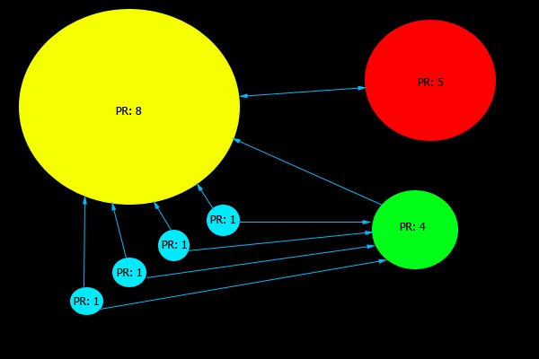

January 31th, 2013
Studiengang Medieninformatik an der Fachhochschule Köln
Campus Gummersbach
Oliver Steinle
Steffen Otschikowski
Unter Off-Page SEO versteht man alle Methoden zur Optimierung einer Webseite, die nicht direkt vom Webseitenbetreiber beeinflusst werden können.
Grundprinzip: Umso mehr Links auf eine Webseite zeigen desto höher ihre Relevanz
Linkpopularität Bezeichnet die Menge an Links Domainpopularität bezeichnet die Anzahl von Backlinks die von verschiedenen Domainnamen eingehen
Algorithmus zum Bewerten vom Webseiten
Von Larry Page und Sergei Brin entwickelt
Bewertungsskala von 0-10
Der PageRank beeinflusst auch die Stärke eines Backlinks
Abwertung durch
Aufwertung durch
Wichtiger Faktor beim erstellen der Rankings
Indikatoren:
System um Seiten zu strafen die unfaire Methoden verwenden (Black Hat Methoden)
Betroffene Seiten werden im Ranking hinten angestellt
Aufenthalt ist zeitlich befristet
Durch das Auswerten von Logfiles ist es möglich verschiedene Informationen festzuhalten z.B.:
Alexa Rank Toolbar zeichnet Surfverhalten auf und erstellt auf dieser Grundlage ein Ranking
möglichst Themennahe Partner finden
nach gleichrangigen Partnern suchen
es existieren Tauschbörsen
Backlinks benötigen Zeit um im System berücksichtigt zu werden
nicht zuviele Backlings (gerade in der Anfangszeit!)
einfache Möglichkeit Backlinks zu erzeugen
sind nach Themengebieten sortiert
Rückverlinkungspflicht beachten
ranking-check.de stellt Katalogsuchmaschine bereit
komfortables Mittel um Informationen zu posten und darüber zu diskutieren
Suchmaschinen schätzen die Aktualität solcher Seiten
Permalinks
bieten die Möglichkeit favorisierte Seiten auf einem Server abzulegen
Zugriff auf Favoriten von anderen Nutzern
Rangliste wird durch Bewertungen erstellt
Zur Unterstützung von Prozessen im Bereich der Suchmaschinenoptimierung
Neben installierbarer Software auch als Browserapplikation
Es gibt kostenlose als auch kostenpflichtige Tools
Zum größenteils Allrounder und decken alle Funktionsbereiche ab
Toolsammlungen: